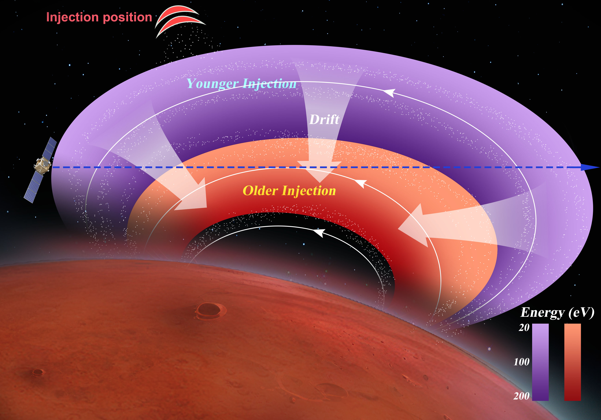
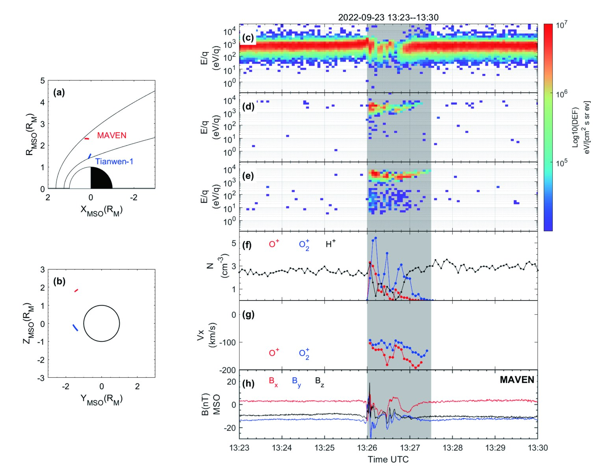
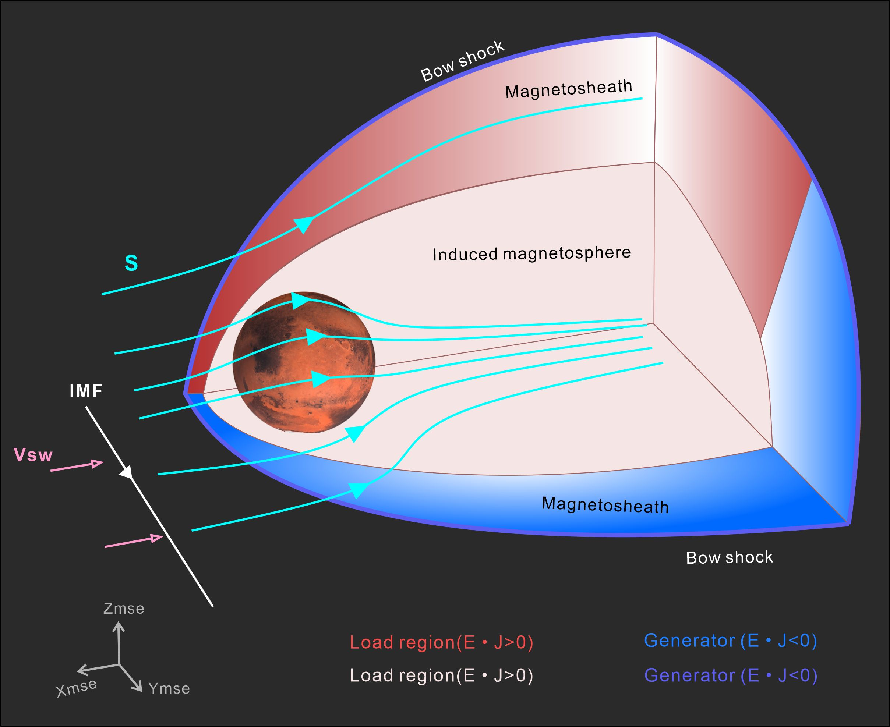
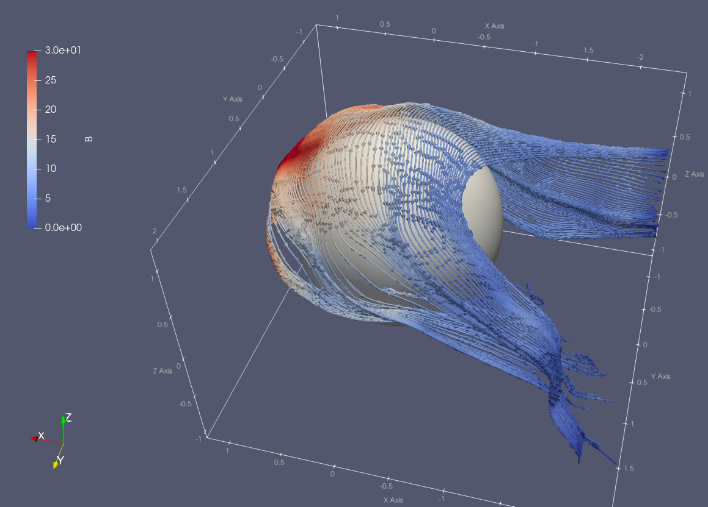
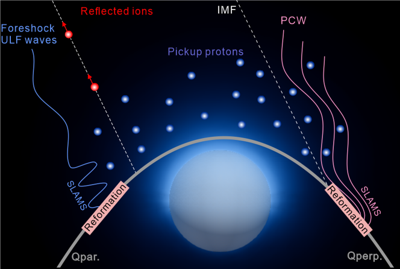

Nature Communications | 2023
Detection of magnetospheric ion drift patterns at Mars
DOI: 10.1038/s41467-023-42630-7
Read the articleResearch Scientist | Boston University
I study solar wind interaction with planets, planetary space environments, electromagnetic field structures, and plasma dynamics in magnetospheres and induced magnetospheres.
Current Role
I am a Research Scientist at the Center for Space Physics, Boston University. My work primarily uses in-situ spacecraft data, especially NASA's MAVEN measurements, to characterize the Martian space environment, solar-wind-driven plasma dynamics, and ion acceleration and escape.
Featured Work

Nature Communications | 2023
DOI: 10.1038/s41467-023-42630-7
Read the article
Nature Communications | 2025
DOI: 10.1038/s41467-025-58351-y
Read the article
JGR: Planets | 2025

JGR: Planets | 2022

AGU Advances | 2025
CV
2018.09 - 2023.06
University of Chinese Academy of Sciences, Beijing, China
2021.11 - 2022.10
Swedish Institute of Space Physics, Kiruna, Sweden
2014.09 - 2018.06
China University of Geosciences (Wuhan), Wuhan, China
2025.08 - Present
Boston University, Boston, MA, USA
2023.09 - 2025.08
Boston University, Boston, MA, USA
2024 Selected to attend 18th NASA Heliophysics Summer School
2024 Outstanding Doctoral Dissertation Award, Chinese Academy of Sciences
2024 Outstanding Contribution to the Mars Express mission 20 years in space, European Space Agency
2023 Dean Scholarship, Chinese Academy of Sciences
2022 National Scholarship, Chinese Academy of Sciences
2020 Zhuliyuehua Scholarship, Chinese Academy of Sciences
2020 National Scholarship, Chinese Academy of Sciences
2024.09 - 2027.08
NASA Solar System Workings. Chuanfei Dong, Principal Investigator. Chi Zhang, Science Principal Investigator.
2025 Panel Reviewer, NASA Heliophysics Theory, Modeling, and Simulations program
2024 Panel Reviewer, NASA Planetary Data Archiving, Restoration, and Tools program
2023 - Present Mission Team Member, Mars Atmosphere and Volatile EvolutioN (MAVEN), NASA